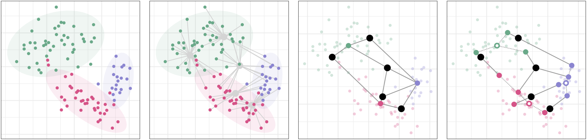

Nonparametric Deconvolution Models
Nonparametric deconvolution models (NDMs) are a family of Bayesian nonparametric models for collections of data in which each observation is the summation over the features from heterogeneous particles. For example, this type of data is found in elections, where we observe district-level vote tallies (observations) of individual citizens’ votes (particles) across each of the candidates or ballot measures (features), where each citizen is from a specific voter cohort (factor). Like the hierarchical Dirichlet process, NDMs rely on two tiers of Dirichlet processes to explain the data with an unknown number of latent factors; each observation is modeled as a weighted average of these latent factors. Unlike existing models, however, NDMs recover how factors vary locally for each observation. This allows us to deconvolve each observation into its constituent factors and describe how these local, observation-specific factors deviate from their corresponding global factors.
Illustrations of multiple latent variable models. Mixture models (far left) assign each observation to one of K clusters, or factors. Admixture models (center left) represent groups of observations, each with its own mixture of K shared factors. Decomposition models (center right) decompose observations into constituent parts by representing observations as a product between group representations and factor features. Deconvolution models (far right, this work) similarly decompose, or deconvolve,observations into constituent parts, but also capture group-specific (or local) fluctuations in factor features.
Citation
@misc{chaney2020nonparametric,
title={Nonparametric Deconvolution Models},
author={Allison J. B. Chaney and Archit Verma and Young-suk Lee and Barbara E. Engelhardt},
year={2020},
eprint={2003.07718},
archivePrefix={arXiv},
primaryClass={cs.LG}
}Resources
- Nonparametric Deconvolution Models [via arXiv]
- BNP@NeurIPS 2018 workshop invited talk [PDF of slides]